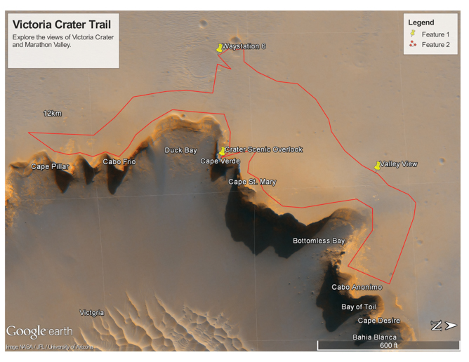

Hikes that are out of this world!


Victoria Crater Hike Information
- Hike Rating: Easy
- Distance: 1.0 miles
- Elevation Gain/Loss: 108ft/-111ft
- Average Slope: 3.8%/-4.4%
- Max Slope: 6.4%/-13.8%
- Amenities: Small waystation
Victoria Crater Hike
Start at waystation 6 in the plains. Take an easy hike to the overlooks of Victoria Crater. After a trip around Duck Bay, soak in the sights at the scenic overlook at Cape Verde. Be sure to stop at Valley View to see the sights of Marathon Valley. This is a good first hike to get acclimated to the Mars experience and test your gear.